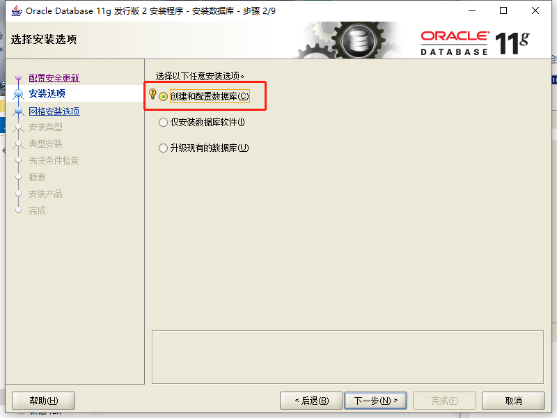
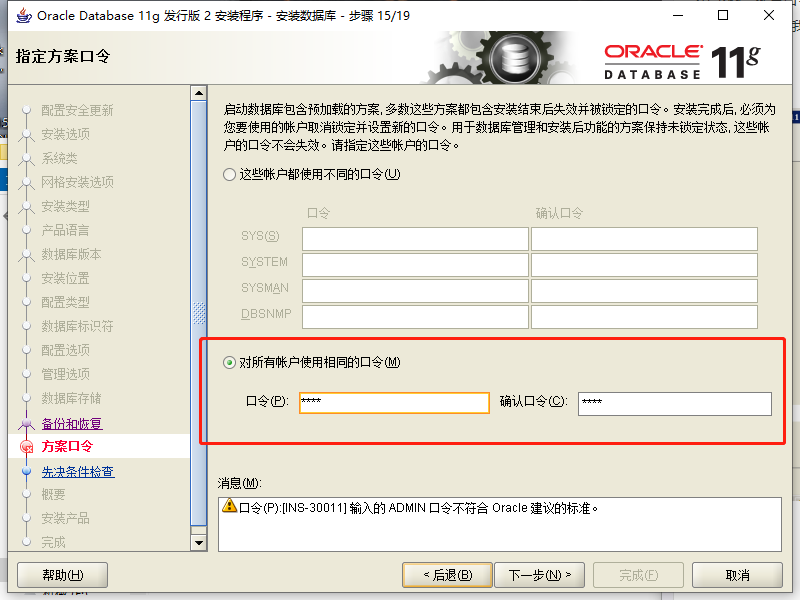

💡 java 环境配置系列，Oracle 详解及安装配置。
# Oracle
Oracle 当今使用最广泛最流行的关系型数据库，由甲骨文公司开发、运营与维护。
在数据库领域中一直处于领先地位，系统可移植性好、使用方便、功能与性能强大、效率高，适用于大、中、小软件开发。放眼当下因高效率（适应高吞吐量）、可靠性好仍是开发商业软件最好的选择（就是要钱还贵）。
# 安装时的坑
前几天在安装的时候在第九步的时候出现的问题
导致安装完以后 sys 的默认密码登录不进去 原因是因为 在给所有账户设置默认口令的时候输入的是 ROOT 不符合 Oracle 的建议标准
Oracle 就会 sys 的密码进行更改，我们只需要安装下面几个步骤使用超级管理员新建用户设置密码进行连接就可以了
win+R 进行 cmd
-- 使用超级管理员登录 | |
CONN sys/change_on_install AS SYSDBA ; |
-- 创建 c##scott 用户 | |
CREATE USER c##scott IDENTIFIED BY tiger ; |
-- 为用户授权 | |
GRANT CONNECT,RESOURCE,UNLIMITED TABLESPACE TO c##scott CONTAINER=ALL ; |
-- 设置用户使用的表空间 | |
ALTER USER c##scott DEFAULT TABLESPACE USERS; | |
ALTER USER c##scott TEMPORARY TABLESPACE TEMP; |
-- 使用 c##scott 用户登录 | |
CONNECT c##scott/tiger |
如果要重新 sys 的密码 还有一种方法，安装完数据库以后在 Windows 菜单栏中有 Database Configuration Assistant
这个是进行表空间配置的，我们可以使用这个进行操作表空间，在操作表空间的同时可以再次的给 sys 账户设置统一默认密码
# 下载及安装
# Downloads
Oracle11 下载 夸克网盘
提取码：fr8P
# Install
我们将下载好的 Oracle 解压出来，并双击 setup.exe

点击继续即可 环境不满足要求是因为 Windows 的原因
打对钩下一步

这里就要注意了 因为我输入口令的时候输入的是 root 不符合 Oracle 建议的标准 但是我还是点击继续了
这样会导致他默认密码的错误 上面已经给出了解决方案

等待 100% 就可以了